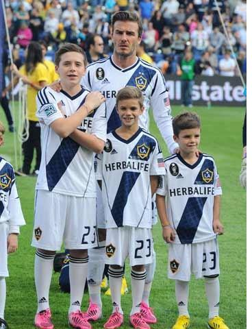
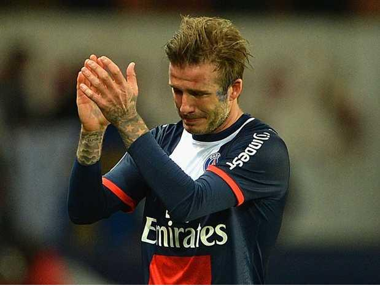

Chương Hai Mươi Mốt

uối tháng 11, 2012, David Beckham tung “bom” gây chấn động MLS: Anh tuyên bố sẽ rời Galaxy sau trận chung kết với Houston Dynamo.
Vậy là sao? Ai cũng xôn xao. Đã ký hợp đồng thêm hai năm, đến tận cuối 2013 cơ mà? Té ra hợp đồng đúng là hai năm, nhưng có điều khoản cho phép Beckham, nếu muốn, có thể tự do dứt áo sau năm thứ nhất. Ngày 1 tháng 12, David ra sân lần cuối trong màu áo Galaxy, cùng đội giành chiến thắng 3 – 1 trước Dynamo, lần thứ hai liên tiếp đăng quang ngôi VĐQG Mỹ.

Beckham và 3 con trai, trước trận chung kết với Houston Dynamo (Ảnh: Nowmagazine)
David sớm rời MLS, có lẽ vì không còn động lực. 5 năm là quá đủ. Những gì cần đạt, anh đã đạt: Tiền tài vào như nước, danh hiệu cũng đã có. Cùng lúc đó, Galaxy ngày càng giàu mạnh hơn, giá trị CLB lên đến hơn 100 triệu đô la. MLS thì ngày càng bành trướng, hồi David đến mới có 14 đội, tới 2012 đã tăng lên 19. Thương vụ Beckham quả đã thành công về nhiều mặt.
Tuy nhiên, nếu David đến Hoa Kỳ với mục đích truyền bá túc cầu giáo, “cải đạo” người Mỹ, thì công việc của anh chẳng khác dã tràng xe cát. Thời điểm 2012, chắc David nhận thức rõ điều đó. Đừng nói gì 5 năm, có 10 năm cũng vẫn thế. Galaxy giàu mạnh hơn đấy, nhưng đến bao giờ mới bắt kịp Manchester United hay Real Madrid? MLS bành trướng đến đâu, cũng không cạnh tranh nổi với Premier League hay La Liga. Người Mỹ đón nhận David thật. Từ một ngôi sao ở trời Âu, David đã trở thành một ngôi sao Mỹ. Song người Hoa Kỳ hâm mộ là hâm mộ Beckham – người – nổi – tiếng, không phải Beckham – cầu – thủ. Họ đến sân xem, thì chỉ để xem Beckham, không phải xem bóng đá. Có Beckham, mà dân Mỹ chỉ quan tâm đến bóng đá thêm được một tẹo, thì khi Beckham đi, ắt hẳn mèo lại hoàn mèo!
Mượn lời Alexi Lalas: Văn hóa Mỹ nó thế!
Rời Galaxy ở tuổi 37, độ tuổi mà hầu hết cầu thủ đã giải nghệ, David vẫn hết sức ăn khách, nhận được không ít hơn 12 lời mời, từ các CLB ở khắp nơi trên thế giới: Châu Âu, Nam Mỹ, Bắc Mỹ, Trung Đông, Nam Phi, Nga, và Trung Hoa. Anh quyết định chọn Paris Saint Germain (PSG) của Pháp.
PSG là CLB có truyền thống. Nước Pháp trước nay chỉ sở hữu 2 CLB từng giành Cúp Châu Âu, đó là Marseille với Cúp C1 năm 1993, và PSG với Cúp C2 năm 1996. Năm 2011, sau khi về tay các nhà tỷ phú Qatar, PSG trở nên đội bóng có tiềm lực tài chính cực mạnh, nuôi tham vọng đổi đời, thành ông lớn thống trị châu Âu. Muốn thành ông lớn thì phải có ngôi sao, phải PR cho người ta chú ý. PSG vung tiền mua ngay Zlatan Ibrahimovic, cầu thủ được nhiều người đánh giá là xuất sắc thứ ba trong làng túc cầu đương đại, chỉ sau hai thiên tài Lionel Messi và Cristiano Ronaldo. Song để PR thì Ibrahimovic vẫn không sao bằng được Beckham, nên PSG phải mời chào cựu thủ quân ĐTQG Anh.
Tuy Beckham vừa trải qua một mùa giải xuất sắc ở MLS, châu Âu là một môi trường hoàn toàn khác. Cùng chung nhận định: PSG mua David thuần túy là PR, nhưng dư luận Pháp vẫn đánh giá rất cao phi vụ này. “Với chữ ký của Beckham, CLB thành Paris bước lên một đỉnh cao mới. Zlatan nay không còn đơn độc. David Beckham, cầu thủ nổi tiếng nhất hành tinh, thần tượng quốc tế, đã gia nhập PSG”, tờ Le Parisien viết. Le Figaro thì nhận định “Spice Boy tới Pháp với tư cách một đại sứ hơn là cầu thủ. Ở Beckham tỏa ra một vẻ đẹp và ánh hào quang quyến rũ. Về mặt hình ảnh và thu nhập, PSG chắc chắn vớ bở. Giải VĐQG Pháp cũng sẽ được chú ý nhiều hơn, thu hút được người xem ở những thị trường mới như Á châu”.
Về phần David, anh tự biết mình đã cống hiến hết sức trong mùa 2012 tại Mỹ, và chuyến sang Pháp chỉ như một cuộc phiêu lưu ngắn ngày trước khi nói câu giã từ. Hợp đồng giữa David và PSG kéo dài vỏn vẹn 5 tháng. Milan cùng Paris vốn được tiếng là hai đô thành quyến rũ, hoa lệ bậc nhất châu Âu, đã từng chơi cho Milan, sao không thử qua Paris cho biết? Đơn giản như vậy thôi, tiền bạc không thành vấn đề. Toàn bộ tiền lương ở PSG, David tặng hết cho từ thiện.
David có thể chơi không cần lương, vì từ lâu, lương bổng chỉ chiếm phần nhỏ trong thu nhập của anh. Năm 2012, David vẫn dẫn đầu danh sách những cầu thủ có thu nhập cao nhất thế giới, hơn đứt những siêu sao đang thời đỉnh cao như Messi và Ronaldo. Trong 50.6 triệu đô la anh kiếm được, chỉ 6 triệu là tiền lương, số còn lại đến từ các nguồn tài trợ, quảng cáo. Hiện tại, David có hợp đồng với hãng giày Adidas, đồng hồ Breitling, điện máy Samsung, thời trang H&M và thức ăn nhanh Burger King. Anh hợp tác với Coty, sản xuất dòng nước hoa mang thương hiệu David Beckham, và nhận tiền để làm đại sứ, quảng bá cho giải bóng đá nhà nghề Trung Hoa.
|
Top 10 Cầu Thủ Có Thu Nhập Cao Nhất Năm 2012 (Triệu Đô La) |
|
|
David Beckham |
50.6 |
|
Cristiano Ronaldo |
43.5 |
|
Lionel Messi |
40.3 |
|
Sergio Aguero |
20.8 |
|
Wayne Rooney |
20.3 |
|
Yaya Toure |
20.2 |
|
Fernando Torres |
20.2 |
|
Neymar |
19.5 |
|
Kaka |
19.3 |
|
Didier Drogba |
17.8 |
(Forbes 2013)
Về sự nghiệp Beckham tại PSG, chúng tôi không viết nhiều, vì quả tình chẳng có gì để viết. David đá cho PSG 14 trận, trong đó chỉ có 5 lần ra sân trong đội hình chính, nhận một thẻ đỏ, và không ghi bàn thắng nào. Ở tuổi 38, mỗi lần ra sân, anh cố gắng đá tròn vai, nhưng không gây ấn tượng đặc biệt. Đội hình PSG vượt trội so với các đối thủ tại Pháp, nên không cần David đóng góp nhiều, họ vẫn dễ dàng lên ngôi VĐQG sớm trước 2 vòng. Như vậy, trong sự nghiệp của mình, David thi đấu ở bốn quốc gia: Anh, TBN, Mỹ và Pháp, đi đến đâu là giành chức VĐQG đến đó[1].
Ngày 16 tháng 5, 2013, Beckham tuyên bố sẽ giã từ sân cỏ vào cuối mùa. 2 ngày sau, anh xuất quân lần cuối, trong trận PSG tiếp Brest trên sân Công Viên Các Hoàng Tử. Để kỷ niệm dịp đặc biệt này, David đi giày mang màu cờ Anh, có thêu tên Victoria và các con. Anh cũng được vinh dự đeo băng đội trưởng.
Trong trận cầu mang tính thủ tục, PSG dễ dàng thắng Brest 3 – 1. David để lại dấu ấn cuối cùng trong đời cầu thủ, với cú phạt góc chuẩn xác, tạo điều kiện cho Matuidi nâng tỷ số 2 – 0 vào phút 31. Phút 81, anh rời sân, giữa những tiếng hô vang “Merci, David” trên khắp khán đài. Beckham ngước lên, gửi nụ hôn gió tới vợ con, rồi giơ tay tri ân người hâm mộ, nước mắt lăn dài trên má. Đồng đội lẫn đối thủ, ai nấy đều ôm hôn, đưa tiễn anh. Sau khi đọc thông báo thay người, phát ngôn viên ngậm ngùi nói thêm “Các bạn vừa chứng kiến giờ phút lịch sử”!
Kết thúc 90 phút, các cầu thủ PSG ùa quanh, vây lấy Beckham, cứ thế tung anh lên cao, như thể tung hô vị tướng quân vừa thắng trận. “Tôi nghĩ rằng đã đến lúc rồi”, David nói, “Tôi đã đạt được tất cả những gì có thể trong sự nghiệp. Giờ đây, tôi ra đi trong tư cách một nhà vô địch.”
Sự nghiệp David Beckham vậy là đã kết thúc trong cái ngày 18 tháng 5 ấy. Từ Nhà Hát Những Giấc Mơ đến Công Viên Các Hoàng Tử, 20 năm dài đầy những vinh quang..

Beckham tri ân CĐV, rơi nước mắt trong trận cuối cùng đời cầu thủ (Ảnh: Businessinsider)
Chú thích:
[1] Không kể hợp đồng cho mượn.